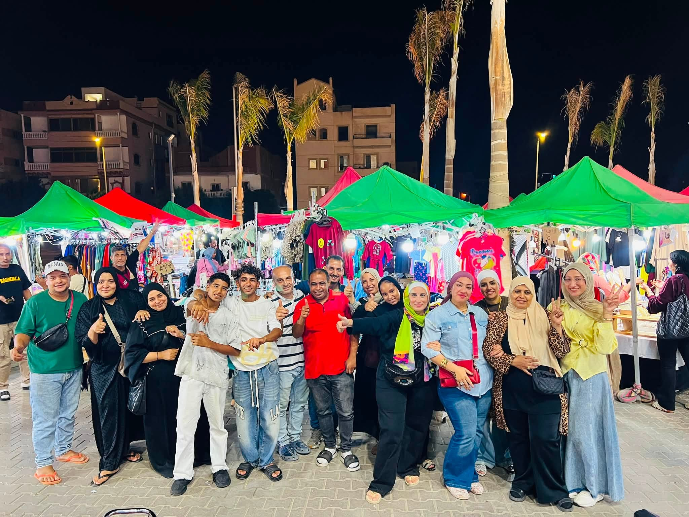
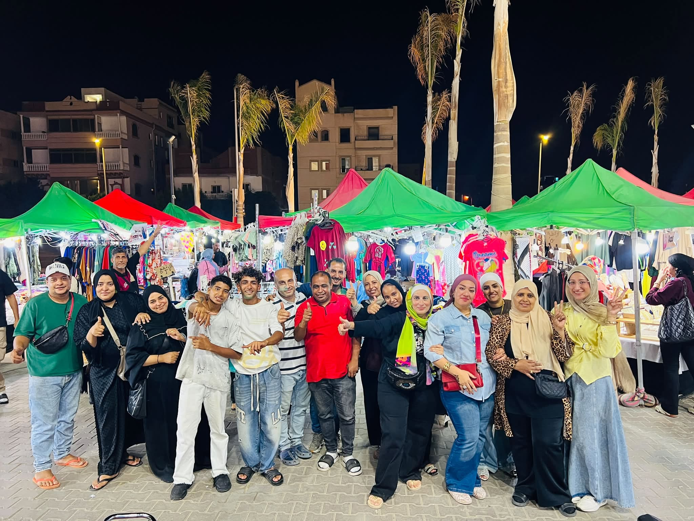
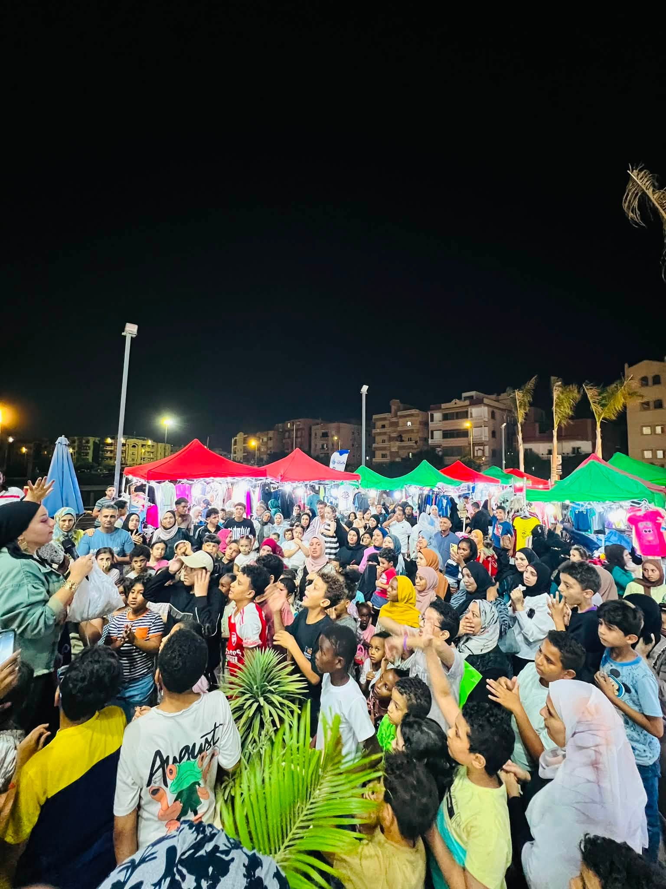
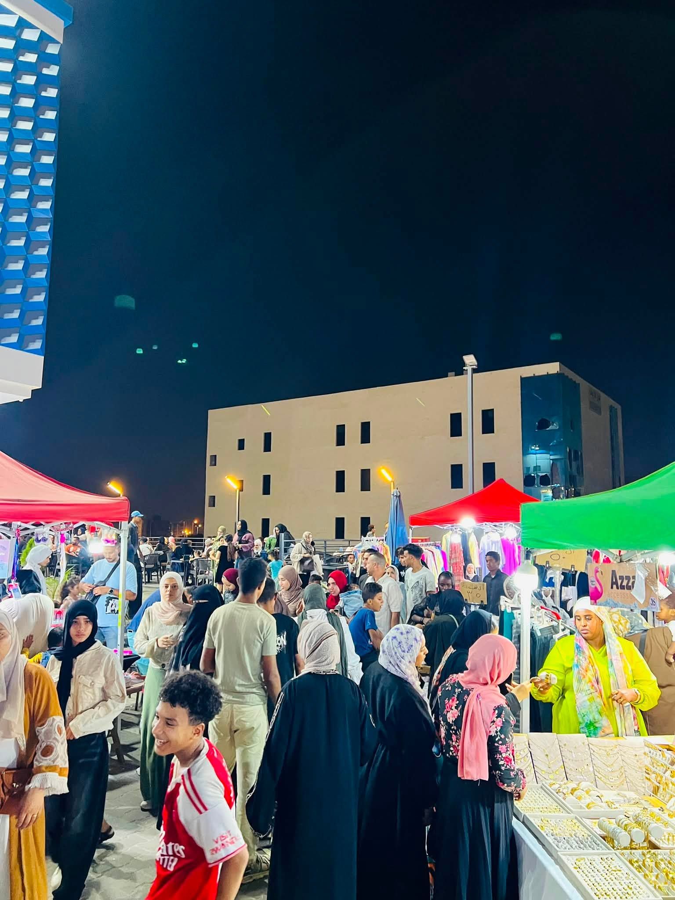
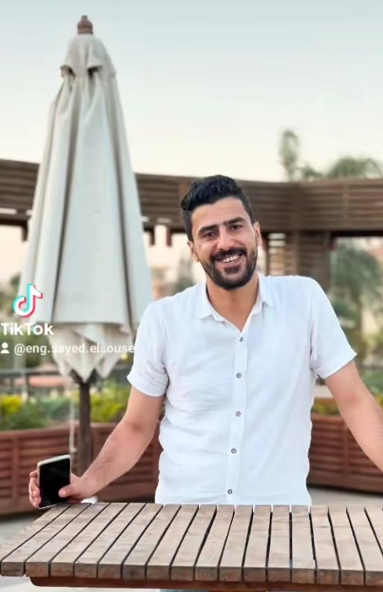

تنظيم المعارض والبازارات
اختيار وتوزيع المساحات، تنسيق المشاركين، وتجهيز تجربة الزائر والعارض.
نخطط وننظم ونجهز المعارض والبازارات والفعاليات، ونربط بين الفكرة والمكان والعارض والجمهور في تجربة متكاملة.
انطلقت MACA من مدينة 6 أكتوبر لمساعدة أصحاب المشروعات والمنظمين والعارضين على تقديم فعاليات أكثر تنظيمًا وجاذبية. نعمل من الفكرة والتخطيط وحتى التجهيز وإدارة يوم الحدث.
اختيار وتوزيع المساحات، تنسيق المشاركين، وتجهيز تجربة الزائر والعارض.
خطة تشغيل واضحة، تنسيق الموردين والموقع، ومتابعة التنفيذ حتى نهاية الحدث.
الخيام، مناطق العرض، الحركة، الإضاءة والعناصر التي تمنح الفعالية حضورها.
دعم العلامات والمشروعات للمشاركة في الفعاليات المناسبة وتجهيز حضورها.
تجارب تنشيطية ومناسبات تساعد على زيادة التفاعل والحركة داخل المكان.
تحديد الاحتياجات والميزانية والجدول الزمني قبل بدء التنفيذ.
لقطات من فعاليات MACA تعكس حركة الزوار، تنوع العارضين وأجواء البازارات على أرض الواقع.





مؤسس ومدير MACA Exhibitions. بدأت MACA من رؤية واضحة: مساعدة أصحاب المشروعات والعارضين على تحويل أفكارهم إلى معارض وفعاليات منظمة وقابلة للتنفيذ.
«لا نبني مجرد مساحة عرض؛ نعمل على خلق تجربة تجمع العارض بالجمهور وتمنح كل فعالية شخصية خاصة بها.»
الهدف، الجمهور، المكان، الميزانية والمتطلبات الأساسية.
تصور المساحات، التجهيزات، الجدول الزمني وتنسيق الأطراف.
متابعة التفاصيل وتشغيل الحدث على أرض الواقع بصورة منظمة.
فيديوهات حقيقية من الفعاليات. اضغط تشغيل لمشاهدة الأجواء.
تواصل معنا لمناقشة الفكرة والمكان والتجهيزات المطلوبة.